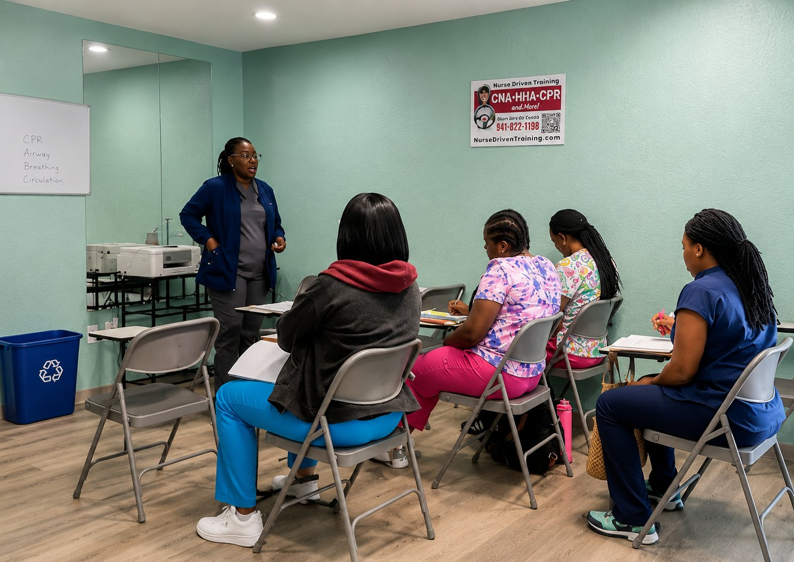
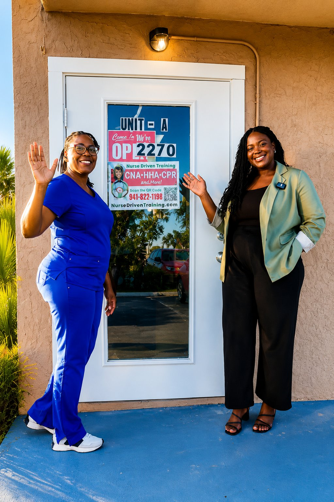

CNA Training Program
A 6-week program combining classroom instruction, hands-on skills practice, and real-world clinical experience to prepare you for the state CNA certification exam.
Nurse Driven Training offers hands-on CNA, Home Health Aide, and CPR classes built for real life — evening, weekend, and flexible scheduling for students who are ready to move toward a career in patient care.

Our organization is dedicated to creating meaningful learning opportunities that uplift and empower every student. With a team of experienced nurses and educators, we help each learner build the confidence, competency, and hands-on skill they need for long-term success in healthcare.

A 6-week program combining classroom instruction, hands-on skills practice, and real-world clinical experience to prepare you for the state CNA certification exam.
Learn to deliver compassionate, in-home care — assisting with daily living activities and supporting client safety, comfort, and independence.
Nationally recognized, instructor-led CPR training. Certification is valid for two years and recognized by employers, schools, and healthcare facilities.
Charlotte County is among the faster-growing counties in Florida, per public county population data, with a population that skews older and a healthcare sector that continues to hire. Nurse Driven Training exists to help Port Charlotte, Punta Gorda, and North Port residents step into that field.
Our home base at 2270 Tamiami Trail, minutes from most of the county.
A short drive for students across northern Charlotte County.
Serving students throughout the greater North Port / Sarasota County line.
Students earning 6–8 hours per week may graduate in as little as 6 weeks.
Wednesday, Friday, and Saturday — with morning, evening, and Saturday clinical time slots.
We confirm your program, review schedule and start date, answer pricing questions, and walk you through enrollment.